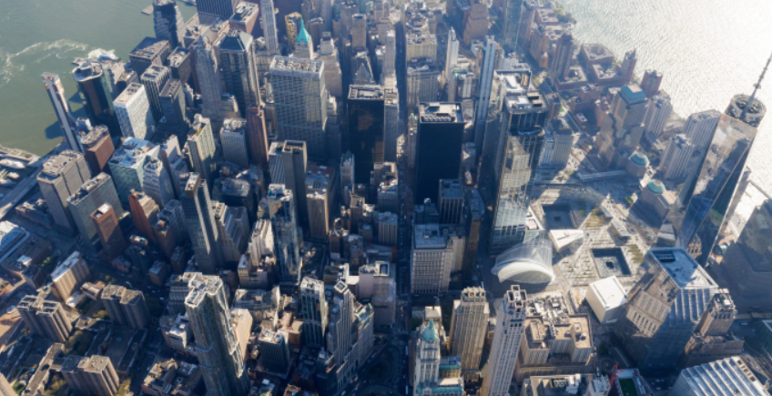

Historia
La historia de Nueva York se desarrolló durante varios siglos y comenzó la ocupación del territorio por las poblaciones amerindias, mucho antes de la llegada de los primeros colonos a lo que es actualmente Manhattan. Las negociaciones que llevaron a la configuración actual de Nueva York con una división en cinco boroughs: Manhattan, Queens, Brooklyn, Bronx y Staten Island, se remontan recién al siglo xix y a la primera mitad del siglo XX.
Lugares importantes

Empire State Building
Es un rascacielos situado en la intersección de la Quinta Avenida con la calle 34 Oeste, en la ciudad de Nueva York (Estados Unidos).
Central Park
Es un parque urbano público situado en el distrito metropolitano de Manhattan, en la ciudad de Nueva York, Estados Unidos. El parque tiene forma rectangular y dimensiones aproximadas de 4000 x 800 m.

Third slide label
Está situada en la esquina de la avenida Broadway y la Séptima Avenida. Recibió su nombre actual por las oficinas de The New York Times, que se encontraban en el edificio One Times Square. También es conocido por ser el sector más céntrico de la ciudad New York.
Densidad de población
Algunos de los barrios más densamente poblados de Nueva York incluyen partes de Manhattan, como Midtown y Lower Manhattan, así como áreas de Brooklyn, como Williamsburg y Brooklyn Heights. Estos lugares suelen tener edificaciones más altas y mayor actividad económica, lo que contribuye a una mayor densidad de población.
Mapa
Es la ciudad más poblada de los Estados Unidos y una de las más pobladas del mundo, con un área urbana de 24 millones de habitante. Desde finales del siglo xix es uno de los centros de la política y la economía mundial, albergando la sede de la Organización de las Naciones Unidas y de numerosas empresas e instituciones financieras de importancia global.
Noticias
Nueva York avisa de la tragedia inmobiliaria
Los precios de la vivienda, tanto la compra como el alquiler, se dispararon en Nueva York un 68 % en la última década, más que en ninguna otra ciudad de Estados Unidos, según un nuevo informe de la oficina del contralor del estado.
Leer mas... Los Knicks mandan en el derbi de Nueva York
Los New York Knicks prolongaron este martes su momento dulce y sumaron su cuarta victoria consecutiva al imponerse por 108-103 a los Brooklyn Nets en el derbi neoyorquino.
Leer mas...